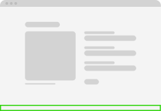
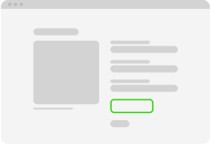
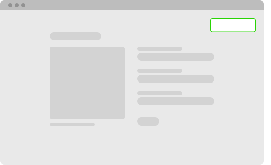

Short title
A descriptive text for local alert.
Global

Local

Toast


NB: Remember to make the global alert fixed to the top of your application and make sure that it extends the full length of the page!
error
e-alert--error
Notify when something goes wrong or the user is denied completing their task. Explain why and what
to do. Example: Error, missing fields and invalid entry. This status can be used with
local
and
global alerts.
warning
e-alert--warn
Help users to avoid error situations and to give attention to something undesirable that may
occur. Explain why and what to do. This status can be used with
local
and
global alerts.
positive
e-alert--toast
Provide a positive response to user actions, like a confirmation that an action is fully
completed. Example: save, edit and submit. This status can only be used with the
toast alerts.
informative
e-alert--info
Inform users to understand minor contextual changes, and are not typically in response to a user
action. Like a helpful tip or a suggestion. This status can be used with
all alerts.